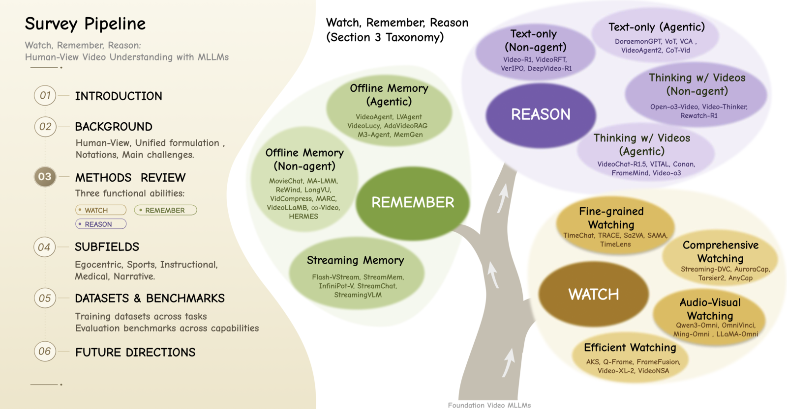

Westlake University
PhD Student in Artificial Intelligence, supervised by Prof. Peidong Liu.
Research: Embodied AI, Multimodal Large Language Models.
World Models · Spatial Intelligence · Embodied AI
I study how intelligent agents can build, predict, and act on representations of the physical world.
I am a PhD student at Westlake University, advised by Prof. Peidong Liu. My work spans 3D scene reconstruction and generation, long-horizon video reasoning, and multimodal post-training. I am building on these foundations toward spatially grounded, action-aware world models for embodied agents.
PhD Student in Artificial Intelligence, supervised by Prof. Peidong Liu.
Research: Embodied AI, Multimodal Large Language Models.

Research Intern, LLM Strategy Department. Mentored by Xiangtai Li.
Master in Pattern Recognition and Intelligent Systems, supervised by Prof. Shunping Ji.
Research: Computer Vision, 3D Reconstruction, Multimodal Learning.
B.S. in Spatial Information and Digital Technology.
VideoZeroBench was released with code and data for evidence-grounded long-video evaluation.
Any 3D Scene is Worth 1K Tokens was released on arXiv.
Two advised-student papers were accepted to ECCV 2026.
Watch, Remember, Reason was released on arXiv.
HiCI was accepted to ICML 2026.
Towards One-to-Many Temporal Grounding was accepted to ICML 2026.
SIU3R received a NeurIPS 2025 Spotlight.
Research direction
My research connects spatial perception and temporal reasoning to the larger goal of learning predictive models that embodied agents can use to plan and act.
Demonstrated foundation
Locate verifiable evidence across long visual observations and connect language to space and time.
OMTG · VideoZeroBench
Demonstrated foundation
Learn compact 3D representations that unify scene geometry, semantics, reconstruction, and generation.
SIU3R · 3DRAE
Current research direction
Model physical dynamics, long-horizon memory, and counterfactual futures conditioned on actions.
Action-conditioned world models
Long-term goal
Use learned world representations for planning, policy learning, and closed-loop embodied adaptation.
Generalist embodied agents
Qi Xu is underlined. * denotes equal contribution.

Spatial state representation
NeurIPS 2025 Spotlight
Alignment-free framework for state-of-the-art 3D reconstruction and scene understanding from unposed images via a shared pixel-aligned 3D representation.
My contributions: Project lead and primary code implementer; co-developed the core method and led benchmarking, ablations, and paper writing.

Temporal reasoning & post-training
ICML 2026
Introduces the first systematic solution for one-to-many temporal grounding with a 56K-sample dataset and SFT/RL training using temporal and CoT-based caption rewards.
My contributions: Co-initiated the project and co-developed the core idea; owned data construction, SFT/RL pipelines, reward design, model training, benchmarking, and paper writing.
Generative 3D representation
arXiv 2026
Performs 3D scene generation directly within an implicit 3D latent space using 3D Diffusion Transformers.
My contributions: Co-designed the core method; implemented the training code and led model training; built the large-scale training dataset and led ablations and evaluation.


arXiv 2026
A human-view survey organizing video MLLM research around watching, remembering, and reasoning for long, multimodal, and knowledge-intensive video understanding.
My contributions: Organized literature for the memory section, created figures and tables, and contributed to writing and revision.

arXiv 2026
A hierarchical long-video QA benchmark that verifies answers with temporal intervals and spatial boxes under a five-level evidence protocol.
My contributions: Co-designed the five-level evaluation protocol, implemented the annotation tool and guidelines, and constructed about 200 complete QA-evidence samples.

NeurIPS 2025
Unsupervised framework for joint ego-motion and optical flow estimation using implicit neural representations and geometric constraints.
My contributions: Contributed to method design and paper revision.
ECCV 2026
Reconstructs high-resolution 3D thermal scenes from low-resolution inputs via physics-informed degradation modeling.
ECCV 2026
A unified RGB-TIR reconstruction framework resolving cross-spectral visibility conflicts through thermal field modeling.
I am open to research conversations and collaborations on spatial world models, embodied intelligence, 3D scene representations, and multimodal systems that connect perception with prediction and action.